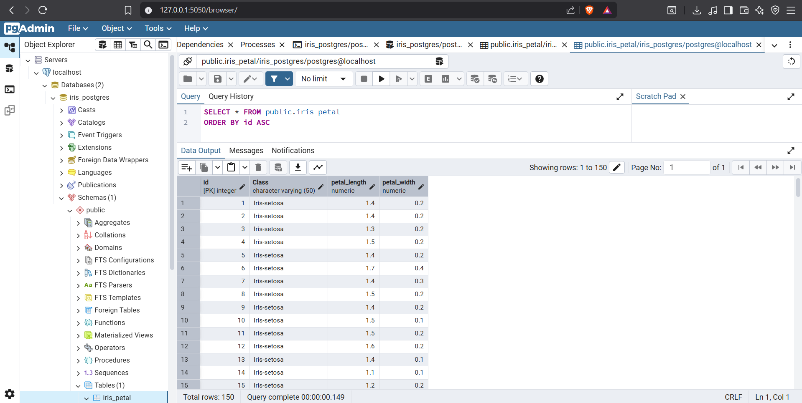
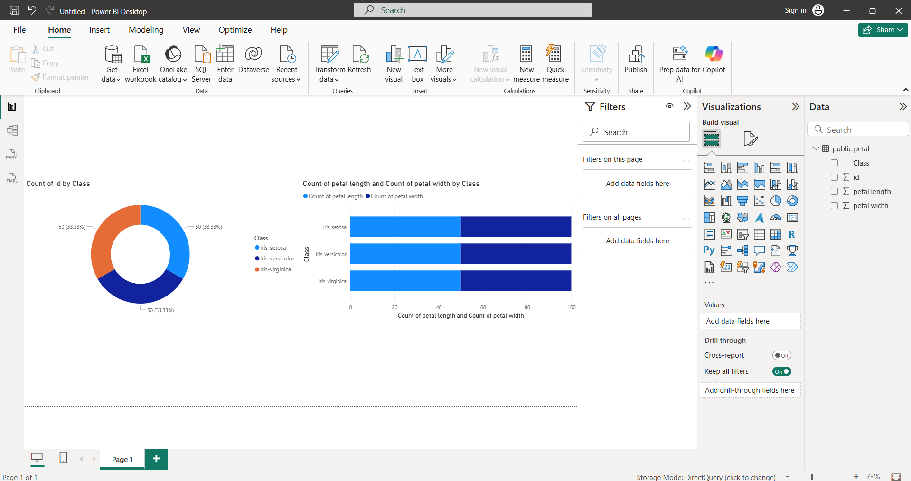
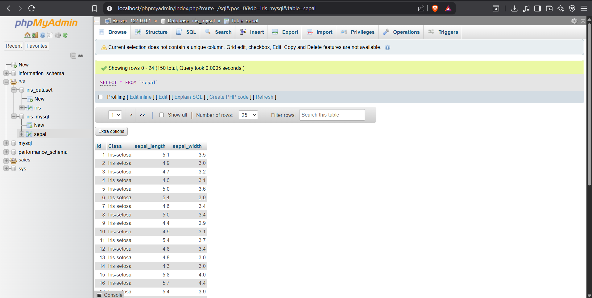
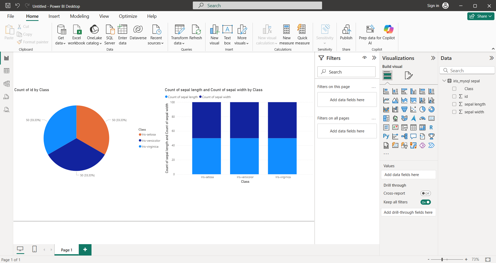

Tugas 3#
import os, pandas as pd
from IPython.display import display
from sqlalchemy import create_engine
from sqlalchemy.exc import OperationalError
Partitioning the Iris dataset#
iris = pd.read_csv('../Assets/data/courseworks/2/iris.csv')
print(iris.info())
<class 'pandas.core.frame.DataFrame'>
RangeIndex: 150 entries, 0 to 149
Data columns (total 6 columns):
# Column Non-Null Count Dtype
--- ------ -------------- -----
0 id 150 non-null int64
1 Class 150 non-null object
2 sepal length 150 non-null float64
3 sepal width 150 non-null float64
4 petal length 150 non-null float64
5 petal width 150 non-null float64
dtypes: float64(4), int64(1), object(1)
memory usage: 7.2+ KB
None
display(iris.head())
| id | Class | sepal length | sepal width | petal length | petal width | |
|---|---|---|---|---|---|---|
| 0 | 1 | Iris-setosa | 5.1 | 3.5 | 1.4 | 0.2 |
| 1 | 2 | Iris-setosa | 4.9 | 3.0 | 1.4 | 0.2 |
| 2 | 3 | Iris-setosa | 4.7 | 3.2 | 1.3 | 0.2 |
| 3 | 4 | Iris-setosa | 4.6 | 3.1 | 1.5 | 0.2 |
| 4 | 5 | Iris-setosa | 5.0 | 3.6 | 1.4 | 0.2 |
petal = iris[['id', 'Class', 'petal length', 'petal width']]
sepal = iris[['id', 'Class', 'sepal length', 'sepal width']]
os.makedirs('../Assets/data/courseworks/3', exist_ok=True)
petal.to_csv('../Assets/data/courseworks/3/petal.csv', index=False)
sepal.to_csv('../Assets/data/courseworks/3/sepal.csv', index=False)
PostgreSQL Petal#

petal = pd.read_csv('../Assets/data/courseworks/3/petal.csv')
print(petal.info())
<class 'pandas.core.frame.DataFrame'>
RangeIndex: 150 entries, 0 to 149
Data columns (total 4 columns):
# Column Non-Null Count Dtype
--- ------ -------------- -----
0 id 150 non-null int64
1 Class 150 non-null object
2 petal length 150 non-null float64
3 petal width 150 non-null float64
dtypes: float64(2), int64(1), object(1)
memory usage: 4.8+ KB
None
display(petal.head())
| id | Class | petal length | petal width | |
|---|---|---|---|---|
| 0 | 1 | Iris-setosa | 1.4 | 0.2 |
| 1 | 2 | Iris-setosa | 1.4 | 0.2 |
| 2 | 3 | Iris-setosa | 1.3 | 0.2 |
| 3 | 4 | Iris-setosa | 1.5 | 0.2 |
| 4 | 5 | Iris-setosa | 1.4 | 0.2 |

MySQL Sepal#

sepal = pd.read_csv('../Assets/data/courseworks/3/sepal.csv')
print(sepal.info())
<class 'pandas.core.frame.DataFrame'>
RangeIndex: 150 entries, 0 to 149
Data columns (total 4 columns):
# Column Non-Null Count Dtype
--- ------ -------------- -----
0 id 150 non-null int64
1 Class 150 non-null object
2 sepal length 150 non-null float64
3 sepal width 150 non-null float64
dtypes: float64(2), int64(1), object(1)
memory usage: 4.8+ KB
None
display(sepal.head())
| id | Class | sepal length | sepal width | |
|---|---|---|---|---|
| 0 | 1 | Iris-setosa | 5.1 | 3.5 |
| 1 | 2 | Iris-setosa | 4.9 | 3.0 |
| 2 | 3 | Iris-setosa | 4.7 | 3.2 |
| 3 | 4 | Iris-setosa | 4.6 | 3.1 |
| 4 | 5 | Iris-setosa | 5.0 | 3.6 |

Get data using script#
MYSQL_HOST = os.getenv('MYSQL_HOST', 'localhost')
MYSQL_PORT = int(os.getenv('MYSQL_PORT', '3306'))
MYSQL_USER = os.getenv('MYSQL_USER', 'root')
MYSQL_PASSWORD = os.getenv('MYSQL_PASSWORD', '')
MYSQL_DATABASE = os.getenv('MYSQL_DATABASE', 'iris_mysql')
PG_HOST = os.getenv('PG_HOST', 'localhost')
PG_PORT = int(os.getenv('PG_PORT', '5432'))
PG_USER = os.getenv('PG_USER', 'postgres')
PG_PASSWORD = os.getenv('PG_PASSWORD', '')
PG_DATABASE = os.getenv('PG_DATABASE', 'iris_postgres')
try:
mysql_engine = create_engine(f"mysql+pymysql://{MYSQL_USER}:{MYSQL_PASSWORD}@{MYSQL_HOST}:{MYSQL_PORT}/{MYSQL_DATABASE}")
mysql_query = "SELECT * FROM sepal;"
df_mysql = pd.read_sql(mysql_query, mysql_engine)
display(df_mysql.head())
except (ImportError, OperationalError) as e:
print(f"Error MySQL: {e}")
Data dari MySQL:
| id | Class | sepal length | sepal width | |
|---|---|---|---|---|
| 0 | 1 | Iris-setosa | 5.1 | 3.5 |
| 1 | 2 | Iris-setosa | 4.9 | 3.0 |
| 2 | 3 | Iris-setosa | 4.7 | 3.2 |
| 3 | 4 | Iris-setosa | 4.6 | 3.1 |
| 4 | 5 | Iris-setosa | 5.0 | 3.6 |
try:
pg_engine = create_engine(f"postgresql+psycopg2://{PG_USER}:{PG_PASSWORD}@{PG_HOST}:{PG_PORT}/{PG_DATABASE}")
pg_query = "SELECT * FROM iris_petal;"
df_postgres = pd.read_sql(pg_query, pg_engine)
display(df_postgres.head())
except (ImportError, OperationalError) as e:
print(f"Error PostgreSQL: {e}")
Data dari PostgreSQL:
| id | Class | petal_length | petal_width | |
|---|---|---|---|---|
| 0 | 1 | Iris-setosa | 1.4 | 0.2 |
| 1 | 2 | Iris-setosa | 1.4 | 0.2 |
| 2 | 3 | Iris-setosa | 1.3 | 0.2 |
| 3 | 4 | Iris-setosa | 1.5 | 0.2 |
| 4 | 5 | Iris-setosa | 1.4 | 0.2 |